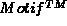

Next: The XF design
Up: The Design of XF
Previous: Interface builders
The following list of interface builders contains commercial
and academic interface builders. The list is not complete,
but it gives a short impression of some of the available
tools.
- DEC VUIT (Digital Equipment Corporation)
The VUIT interface builder
supports the  widget set, and additional user defined
widgets. The application interface is shown in a work area,
where it can be constructed interactively. VUIT allows the
inserting, configuring and layouting of the widgets. The
generated interface code (C, Fortran, ADA or Pascal) can
call user defined functions, that are stored separately from
this code. The interface builder supports the
internationalization of the resulting program.
widget set, and additional user defined
widgets. The application interface is shown in a work area,
where it can be constructed interactively. VUIT allows the
inserting, configuring and layouting of the widgets. The
generated interface code (C, Fortran, ADA or Pascal) can
call user defined functions, that are stored separately from
this code. The interface builder supports the
internationalization of the resulting program.
- HP Interface Architect (Hewlett-Packard Company)
This interface builder is based upon the  widget set. Widgets can
be inserted interactively, modified and positioned in a work
area. For various resource types, additional dialogs support
the specification of the resource value. The program has an
internal C interpreter that reduces the turn around time,
and allows it to test the changes immediately.
widget set. Widgets can
be inserted interactively, modified and positioned in a work
area. For various resource types, additional dialogs support
the specification of the resource value. The program has an
internal C interpreter that reduces the turn around time,
and allows it to test the changes immediately.
- NeXT Interface-Builder (NeXT Computer Inc.)
This system
is completely integrated into the NeXT environment
(Nextstep). This makes it more powerful than many other
interface builders, as the communication between the
interface builder, the application to be built, other
applications and the system environment is more
sophisticated. The user can interactively create, configure
and layout objects in a work area. The objects that are
manipulated are instances of the NeXT interface objects. The
classes that implement the interface objects are implemented
in objective C. These instanciated objects communicate with
each other via messages. The interface builder supports the
definition of connections between these objects. The
automatically generated objective C code contains all
definitions and declarations that are needed for the
application interface. The user can enrich this code with
the functionality that is required by the program.
- Ibuild[#Vlissides92##1#]
Ibuild was developed by
John Vlissides (IBM T.J. Watson Research Center), Steven
Tang (Stanford University) and Charles Brauer (Fujitsu
Network Transmission Systems, Inc.). The concept of Ibuild
is different from that of most of the other application
builders. The program is based upon Unidraw, a framework for
building direct manipulation editors. The interface that is
built by the user is simulated. This allows an abstraction
from concrete widget sets (toolkits). The user can develop
interfaces independently from widget sets (toolkits) that
may not even exist. The application is constructed in a more
drawing like way, where the objects are layouted in a
WYSIWYG style and the relationships of the objects are
specified interactively. As the system is based upon a
framework that is designed for drawing and direct
manipulation, it is easy to build applications that handle
graphical input and direct manipulation. The program
generates C++ code for the InterViews and UniDraw toolkits.
- SUIT
SUIT was developed by Randy
Pausch, Matthew Conway and Rober DeLine from the University
of Virginia. It is an interface toolkit, which was designed
to be easy to use, and to be available at various platforms.
An interface built with SUIT is a collection of objects that
have a property list (describing the state of the object), a
C procedure that examines the state of the object, and a C
procedure that handles the user input and changes the object
state. To interactively manipulate objects, a property
editor gives access to the different properties of the
available objects. The application can be modified while
the program is running. To avoid two different modes, one
for working and the other for editing, the manipulation of
objects is done with a (keyboard) modifier, while the normal
work with the objects is done without a modifier.
- GINA
GINA was developed at the GMD
Germany. It is an interface builder based upon the 
widget set, and upon Common Lisp. Widgets can be created and
manipulated in a work space. The parametrization and
layouting of the widgets is supported by special dialogs,
and it is possible to add code that implements the
application functionality at running time. The program
produces a lisp or a C++ code file that implements the
interface. The user can add functionality to the program by
adding the code to a second (special) file that is also part
of the resulting application.
- BYO
BYO
is a Tcl/Tk
based
interface builder that was developed at the Victoria
University of Wellington, New Zealand by Andrew Robinson,
James Noble, Peter Wood, Roanne Steele, Alexander
Leadbeater, Alan Young and Paul Scheffer. The basic concept
of this program is to have an interface builder that
directly manipulates a running application. To allow this,
the interface builder takes advantage of a simple
communication feature that is part of the Tk
system. It is
possible to manipulate several applications at the same
time. There are various interface builder dialogs supporting
the creation, parametrization and layouting of the widgets.
The current status of the manipulated application is
retrieved and saved to a Tcl/Tk
file.
Next: The XF design
Up: The Design of XF
Previous: Interface builders
Harry Beker
Thu Feb 29 18:06:38 MET 1996